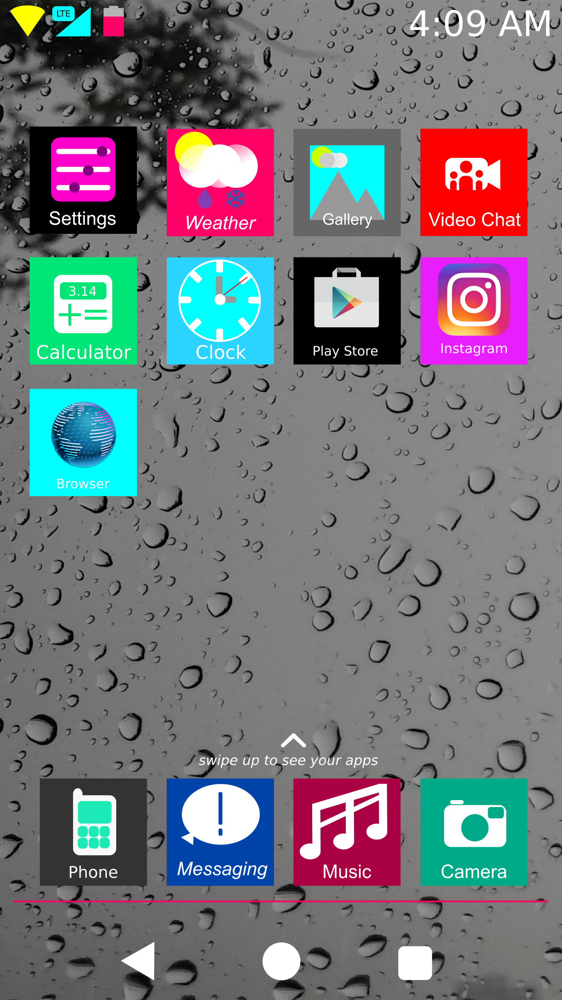
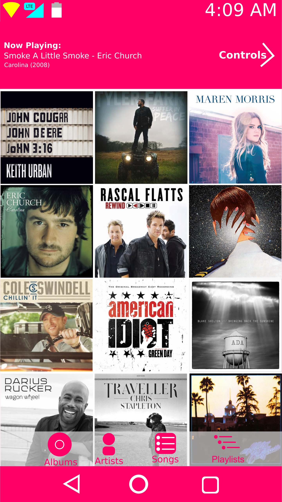
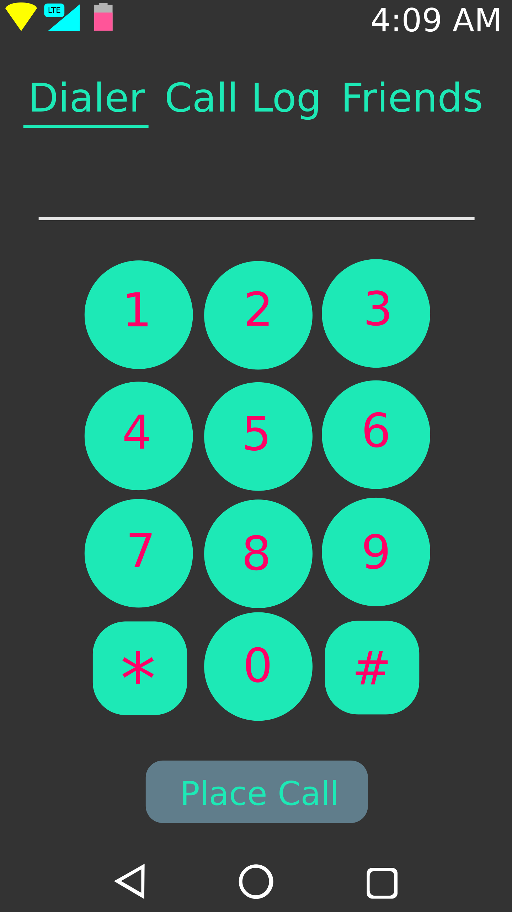
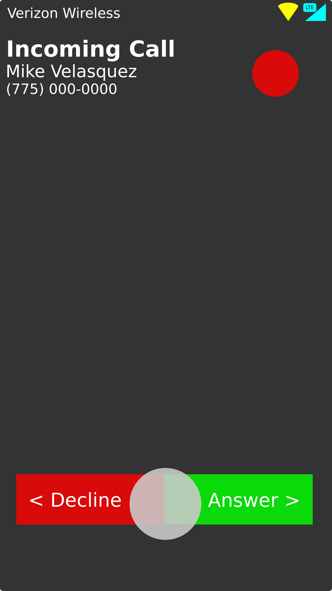
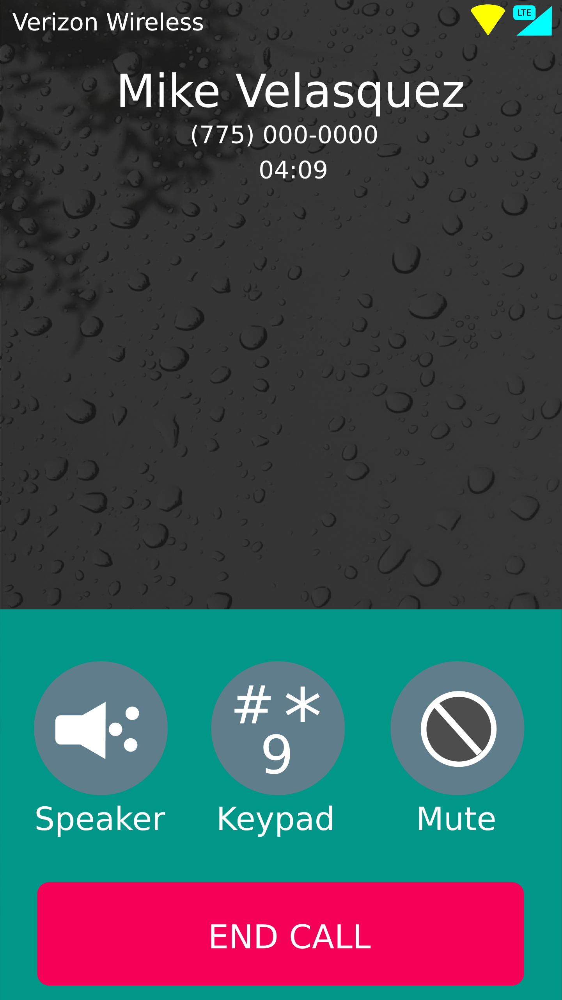

As you can see, Hevena OS ships with only a few system apps (Instagram and the Play Store are included in this example down below to show how third party icons are handled.). Let's go through a few of these apps.
Firstly, one of the apps I WILL NOT be going over is the Video Chat app. This is going to be a simple video calling app, but will very likely not be shipped because I don't have the server stuff and probably all of the other technical stuff to support it. This might be shipped in a future release, however.
The first app we'll go over is the Music app.
As you can see, this is the basic outline of the music app. I haven't really drawn up more of the app, but this is the first page you'll be greeted with. At the top, you have a little info about what music you're playing currently or was playing previously. It also has a small arrow link to the controls. Along the bottom, there are different buttons to accesss your albums collection, artists, individual songs, and playlists that you can create.
The dialer is a very simple app. Just three pages are along the top - The dialer itself, your call history, and your list of contacts (referred to as "friends"). Other than that, you have a dialer pad, and a button to place the call.
The Screen you'll see when there is an incoming call. Swipe left to decline, or swipe right to answer.
Say you answer that call, this is the screen you see. Sorry the UI color blends in with the page color. I'll be working on a fix for that soon.